Варіант 4. Виконав Чумак Кирил, група ІПЗ-11(3). Викладач Ковалюк Тетяна Володимирівна.
Мета роботи
- Ознайомитися з особливостями посилальних типів даних.
- Опанувати технологію застосування посилальних типів даних.
- Навчитися розробляти алгоритми та програми із застосуванням посилальних типів даних.
Умова задачі
Варіант 4, завдання підвищеної складності. У таблиці методички 24 варіанти, тому для номера 28 у списку групи маємо 28 - 24 = 4.
Розробити програму, команди меню якої передбачають такі дії:
- Згенерувати дві розріджені матриці довільної вимірності, кількість нульових елементів яких більше за 60%. Збереження кожної матриці в оперативній пам'яті здійснити в рядковому форматі CRS у вигляді трьох одновимірних масивів: AN зберігає значення ненульових елементів у кількості NNZ, JA зберігає номери стовпців з ненульовими елементами в кількості NNZ, IA має по одному елементу на рядок матриці і кодує індекс ненульового елемента в AN, з якого починається даний рядок. Він може містити додатковий кінцевий елемент, для якого встановлено значення NNZ.
- Вивести матриці на екран по рядках та стовпцях.
- Вивести на екран одновимірні масиви, що зберігають розріджені матриці.
- Визначити добуток двох матриць за алгоритмом розріджених матриць.
- Визначити добуток двох матриць, застосовуючи стандартний алгоритм роботи з матрицями.
- Порівняти час виконання операцій і обсяг пам'яті при використанні цих двох алгоритмів.
Вимоги методички: команди меню виконуються через покажчики на функції; пам'ять під масиви виділяється і звільняється динамічно; масиви передаються у функції через покажчики; функції повертають масиви через покажчики; доступ до елементів здійснюється через покажчики. Бібліотеку STL застосовувати не можна.
Аналіз задачі
Щоб добуток існував, матриця A має розмір n · m, а матриця B розмір m · p. Числа n, m, p вводяться від 3 до 200. Неправильне значення дає повідомлення і повторне введення. Умова вимагає понад 60% нулів, а теорія каже, що ненульових елементів у розрідженій матриці до 20%. Тому в кожній матриці рівно 20% ненульових елементів без дробової частини. Цифри від 1 до 9 записуються у випадкові вільні місця.
Матриця лежить в одному блоці пам'яті рядок за рядком, тому елемент i, j читається як
*(matrix + i * columns + j). У масивах CRS номери рядків і стовпців починаються з 0, а масив IA
має n + 1 елемент, останній дорівнює NNZ.
Обидва алгоритми рахують ту саму формулу:
Стандартний алгоритм виконує n · m · p множень, навіть якщо число дорівнює нулю. Алгоритм CRS бере в рядку A лише ненульові елементи. Для кожного такого елемента зі стовпця k він проходить лише ненульові елементи рядка k матриці B і додає добутки до c.
Добуток двох розріджених матриць може бути вже не розрідженим, тому обидва алгоритми повертають його звичайною матрицею через покажчик. У першому запуску він має 11 ненульових елементів із 30.
Одне множення надто швидке для clock(), тому функція measureTimes повторює його
100 разів і ділить час на кількість повторів. Пам'ять рахується через sizeof(int), помножений на
кількість чисел:
Меню працює через масив покажчиків на функції commands. Номер пункту вибирає покажчик, а
команда викликається як (*command)(). Поки матриць немає, виконується лише перша команда.
Порівняння потребує обох добутків. Матриці, більші за 12 рядків або стовпців, на екран не виводяться.
Перед новою генерацією і наприкінці програми пам'ять звільняється через delete[].
Таблиця 1 - Функції програми
| Функція | Що робить |
|---|---|
printTitle | виводить назву роботи, автора й умову завдання |
inputNumber | вводить ціле число із заданих меж |
createMatrix | виділяє пам'ять, заповнює нулями, повертає покажчик |
generateMatrix | створює матрицю із заданою кількістю ненульових елементів |
packMatrix | заповнює масиви AN, JA, IA |
freeMemory | звільняє пам'ять усіх масивів |
generateMatrices | команда 1: вводить розміри, створює матриці й масиви |
printMatrix | виводить матрицю |
printMatrices | команда 2: виводить матриці A і B |
printArray | виводить одновимірний масив |
printArrays | команда 3: виводить масиви обох матриць |
multiplySparse | множить матриці у форматі CRS |
multiplyStandard | множить матриці стандартним алгоритмом |
calculateSparseProduct | команда 4: обчислює і виводить добуток за CRS |
calculateStandardProduct | команда 5: обчислює і виводить стандартний добуток |
areMatricesEqual | перевіряє, чи однакові дві матриці |
measureTimes | вимірює час одного множення обома алгоритмами |
compareAlgorithms | команда 6: порівнює результати, час і пам'ять |
runMenu | виводить меню і виконує команди через покажчики |
main | викликає ці функції по черзі |
Джерела: Ковалюк Т.В. Алгоритмізація та програмування, 2024; Ковалюк Т.В., Петрівський В.Я. Гарний стиль програмування мовами C, C++, C#, 2025; Писсанецки С. Технология разреженных матриц; Deitel P., Deitel H. C++ How to Program.
Блок-схема алгоритму

printTitle (виведення назви роботи, автора й умови завдання)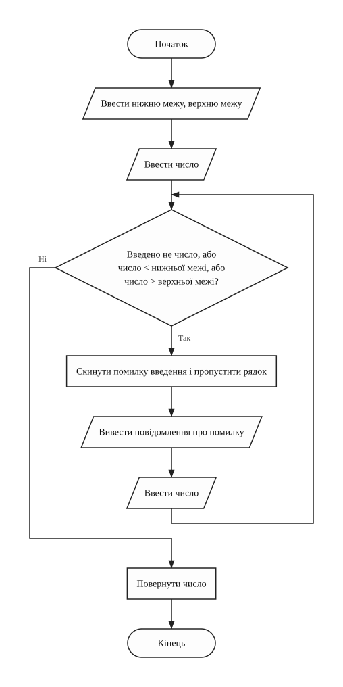
inputNumber (введення цілого числа із заданих меж)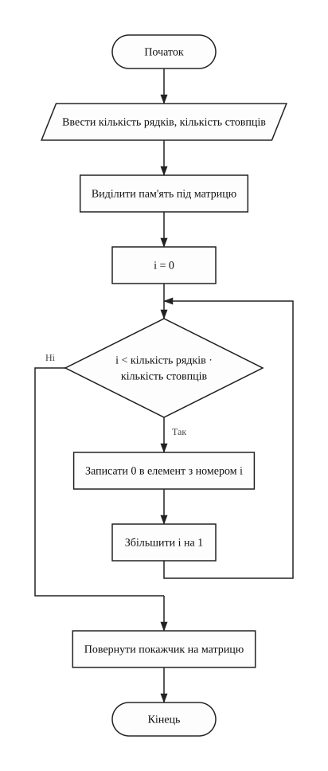
createMatrix (виділення пам'яті під матрицю і заповнення нулями)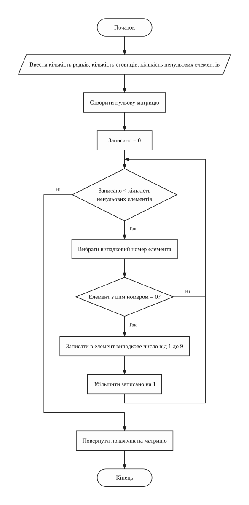
generateMatrix (генерація розрідженої матриці)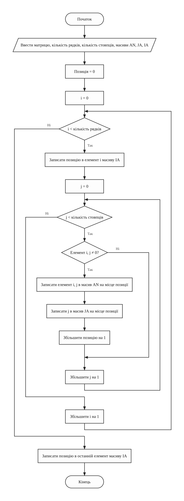
packMatrix (заповнення масивів AN, JA, IA)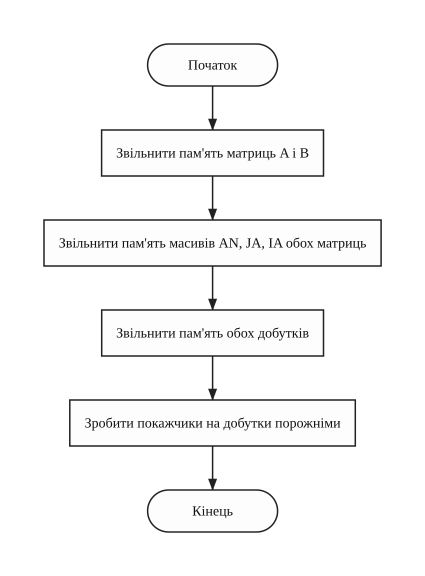
freeMemory (звільнення пам'яті всіх масивів)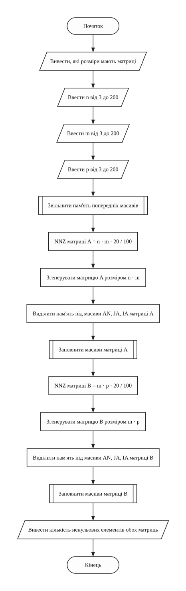
generateMatrices (команда 1: генерація матриць A, B і їхніх масивів)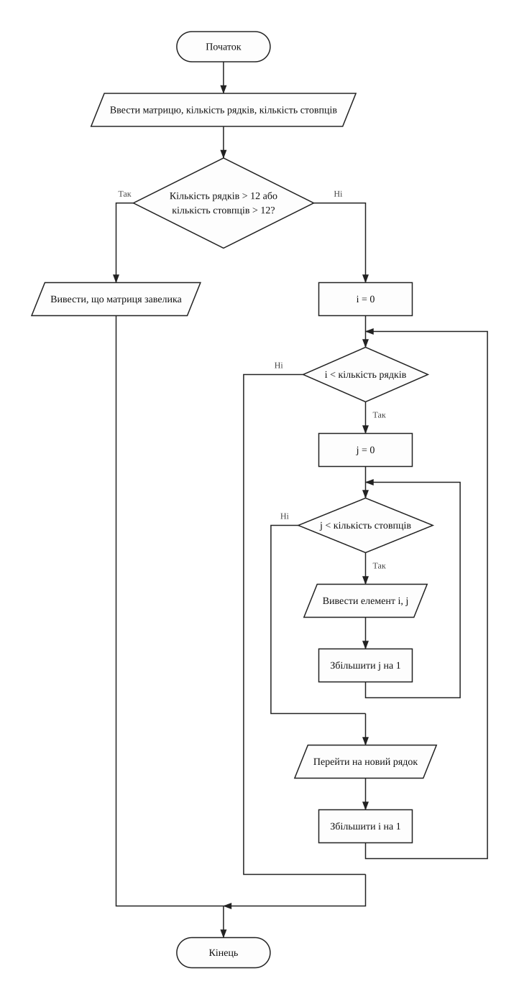
printMatrix (виведення матриці рядками і стовпцями)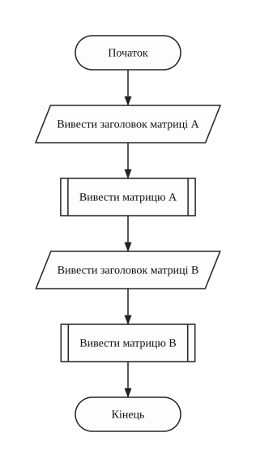
printMatrices (команда 2: виведення матриць A і B)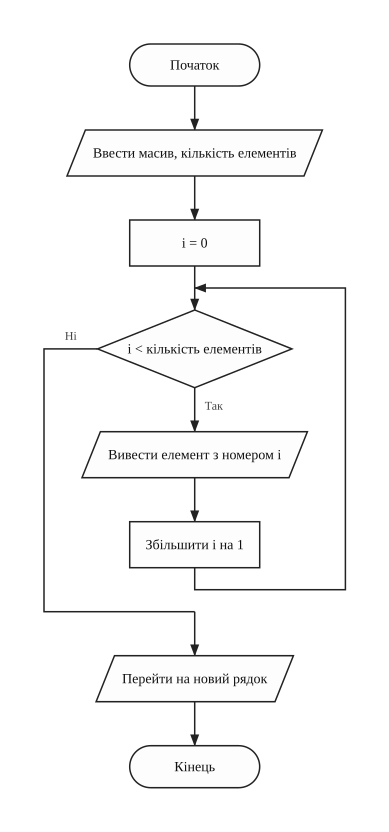
printArray (виведення одновимірного масиву)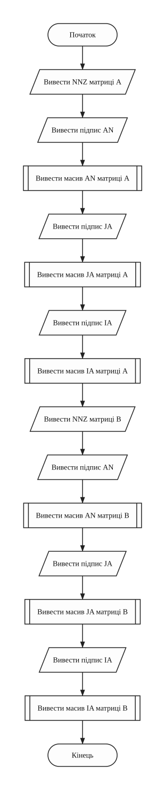
printArrays (команда 3: виведення масивів AN, JA, IA обох матриць)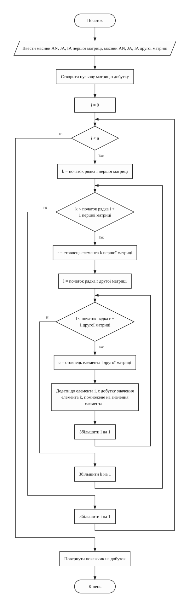
multiplySparse (множення за алгоритмом розріджених матриць)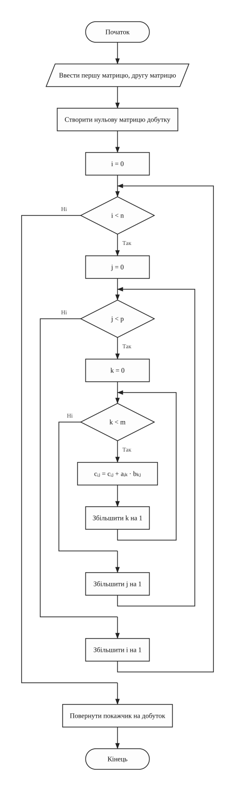
multiplyStandard (множення стандартним алгоритмом)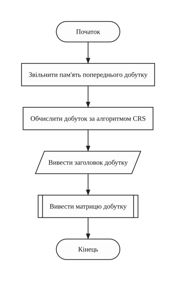
calculateSparseProduct (команда 4: добуток за алгоритмом розріджених матриць)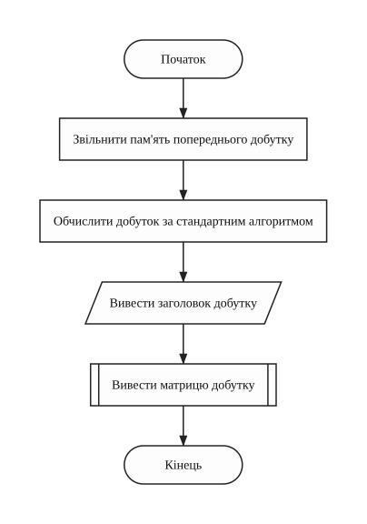
calculateStandardProduct (команда 5: добуток за стандартним алгоритмом)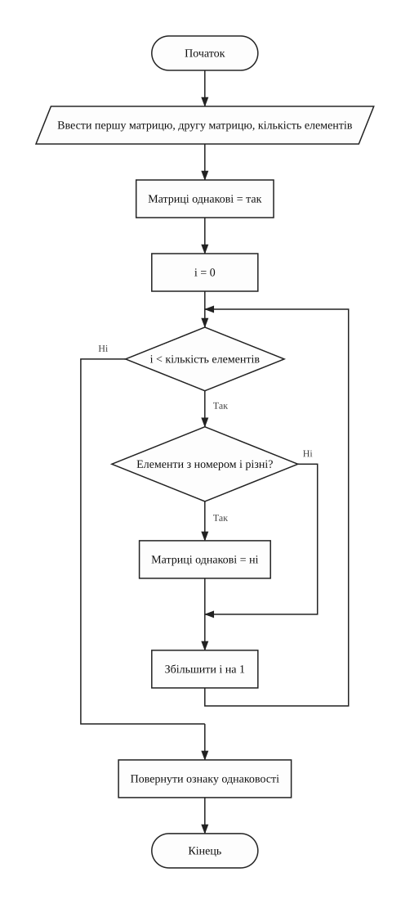
areMatricesEqual (перевірка, чи однакові дві матриці)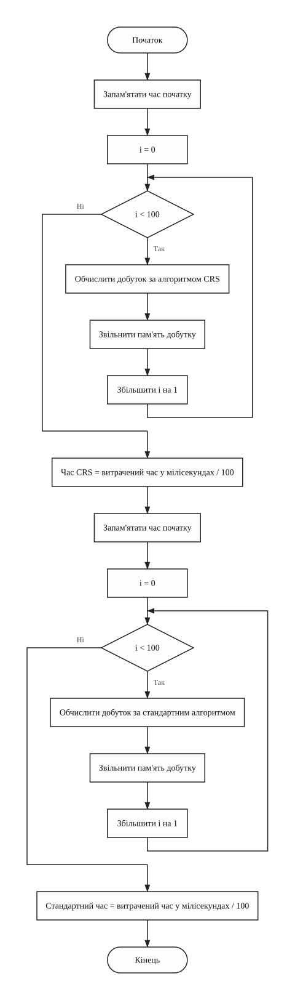
measureTimes (вимірювання часу одного множення обома алгоритмами)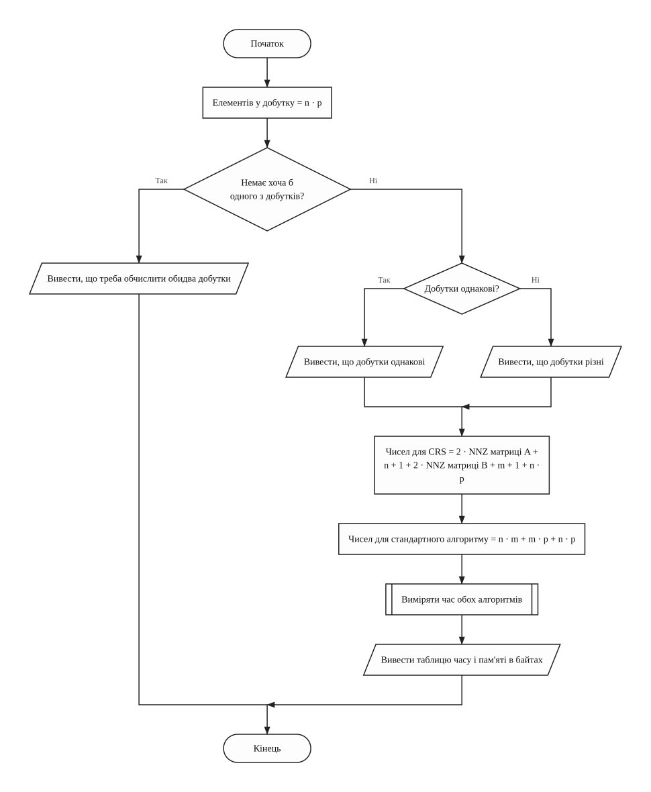
compareAlgorithms (команда 6: порівняння результатів, часу і пам'яті)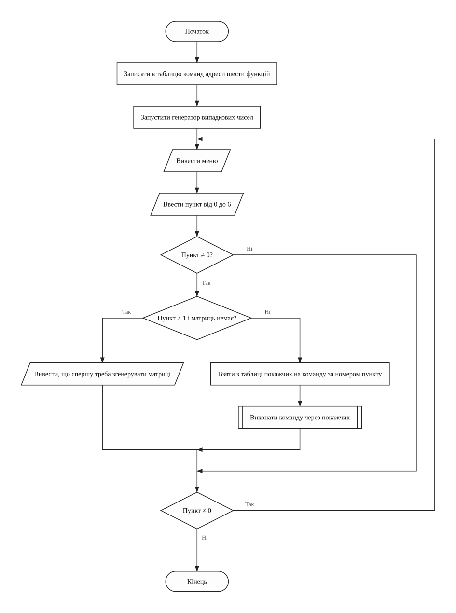
runMenu (меню команд через таблицю покажчиків на функції)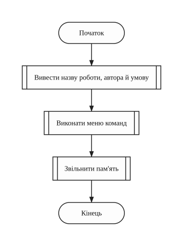
main (головна функція)Текст програми
Файл task1.cpp
/// <summary>
/// Лабораторна робота №8, варіант 4. Перемножити дві розріджені матриці у
/// форматі CRS і стандартним алгоритмом, порівняти час і пам'ять.
/// </summary>
/// <remarks>
/// Ім'я файлу: task1.cpp
/// Автор: Чумак Кирил, гр. ІПЗ-11(3)
/// Номер версії модуля: version 1
/// </remarks>
#include <cstdlib>
#include <ctime>
#include <iomanip>
#include <iostream>
using namespace std;
// Константи
const int MIN_SIZE = 3; // найменший розмір матриці
const int MAX_SIZE = 200; // найбільший розмір матриці
const int MAX_PRINT_SIZE = 12; // найбільший розмір, який виводиться
const int MAX_VALUE = 9; // найбільше значення елемента
const int NON_ZERO_PERCENT = 20; // частка ненульових елементів, відсотки
const int REPEAT_COUNT = 100; // кількість повторів для вимірювання часу
const int COMMAND_COUNT = 6; // кількість команд меню
// Глобальні змінні
int rowCount = 0; // кількість рядків A і добутку, n
int middleSize = 0; // кількість стовпців A і рядків B, m
int columnCount = 0; // кількість стовпців B і добутку, p
int* matrixA = NULL; // матриця A, n * m
int* matrixB = NULL; // матриця B, m * p
int nonZeroA = 0; // NNZ матриці A
int* valuesA = NULL; // масив AN матриці A
int* columnsA = NULL; // масив JA матриці A
int* rowStartsA = NULL; // масив IA матриці A
int nonZeroB = 0; // NNZ матриці B
int* valuesB = NULL; // масив AN матриці B
int* columnsB = NULL; // масив JA матриці B
int* rowStartsB = NULL; // масив IA матриці B
int* sparseProduct = NULL; // добуток за алгоритмом розріджених матриць
int* standardProduct = NULL; // добуток за стандартним алгоритмом
float sparseTime = 0; // час одного множення за алгоритмом CRS, мс
float standardTime = 0; // час одного стандартного множення, мс
/// <summary>
/// Виводить назву роботи й автора
/// </summary>
void printTitle()
{
cout << "Lab work 8. Variant 4." << endl;
cout << "Author: Kyryl Chumak, group IPZ-11(3)" << endl << endl;
cout << "Generate two sparse matrices with more than 60% of zeros" << endl;
cout << "and store them in CRS format: arrays AN, JA, IA. Find" << endl;
cout << "their product by the sparse algorithm and by the standard" << endl;
cout << "one. Compare the time and the memory." << endl;
}
/// <summary>
/// Вводить ціле число із заданих меж. Поки введено не число або число поза
/// межами, введення повторюється
/// </summary>
/// <param name="minValue">нижня межа</param>
/// <param name="maxValue">верхня межа</param>
/// <returns>введене число</returns>
int inputNumber(int minValue, int maxValue)
{
int number = 0; // введене число
cin >> number;
while (cin.fail() || number < minValue || number > maxValue)
{
cin.clear(); // скинути помилку введення
cin.ignore(1000, '\n'); // і пропустити неправильний рядок
cout << "Error! Enter a number from " << minValue << " to " << maxValue
<< ": ";
cin >> number;
}
return number;
}
/// <summary>
/// Виділяє пам'ять під матрицю і заповнює її нулями
/// </summary>
/// <param name="rows">кількість рядків</param>
/// <param name="columns">кількість стовпців</param>
/// <returns>покажчик на матрицю</returns>
int* createMatrix(int rows, int columns)
{
int* matrix = new int[rows * columns]; // елементи йдуть рядок за рядком
int i = 0; // номер елемента
for (i = 0; i < rows * columns; i++)
{
*(matrix + i) = 0;
}
return matrix;
}
/// <summary>
/// Створює матрицю і записує у випадкові вільні місця задану кількість
/// ненульових елементів
/// </summary>
/// <param name="rows">кількість рядків</param>
/// <param name="columns">кількість стовпців</param>
/// <param name="nonZero">кількість ненульових елементів</param>
/// <returns>покажчик на матрицю</returns>
int* generateMatrix(int rows, int columns, int nonZero)
{
int* matrix = createMatrix(rows, columns);
int placed = 0; // скільки елементів уже записано
int position = 0; // випадковий номер елемента
while (placed < nonZero)
{
position = rand() % (rows * columns);
if (*(matrix + position) == 0)
{
*(matrix + position) = rand() % MAX_VALUE + 1;
placed++;
}
}
return matrix;
}
/// <summary>
/// Заповнює масиви CRS. Масив IA отримує номер у AN, з якого починається кожен
/// рядок, а останнім елементом NNZ
/// </summary>
/// <param name="matrix">матриця</param>
/// <param name="rows">кількість рядків</param>
/// <param name="columns">кількість стовпців</param>
/// <param name="values">масив AN</param>
/// <param name="columnNumbers">масив JA</param>
/// <param name="rowStarts">масив IA</param>
void packMatrix(int* matrix,
int rows,
int columns,
int* values,
int* columnNumbers,
int* rowStarts)
{
int position = 0; // номер у масивах AN і JA
int i = 0; // номер рядка
int j = 0; // номер стовпця
for (i = 0; i < rows; i++)
{
*(rowStarts + i) = position;
for (j = 0; j < columns; j++)
{
if (*(matrix + i * columns + j) != 0)
{
*(values + position) = *(matrix + i * columns + j);
*(columnNumbers + position) = j;
position++;
}
}
}
*(rowStarts + rows) = position;
}
/// <summary>
/// Звільняє пам'ять усіх масивів. Покажчики на добутки стають порожніми, щоб
/// було видно, що добутків ще немає
/// </summary>
void freeMemory()
{
delete[] matrixA;
delete[] matrixB;
delete[] valuesA;
delete[] columnsA;
delete[] rowStartsA;
delete[] valuesB;
delete[] columnsB;
delete[] rowStartsB;
delete[] sparseProduct;
delete[] standardProduct;
sparseProduct = NULL;
standardProduct = NULL;
}
/// <summary>
/// Команда 1. Вводить розміри, генерує матриці A і B та створює їхні масиви AN,
/// JA, IA
/// </summary>
void generateMatrices()
{
cout << "Sizes of the matrices: A is n x m, B is m x p." << endl;
cout << "Enter n (from " << MIN_SIZE << " to " << MAX_SIZE << "): ";
rowCount = inputNumber(MIN_SIZE, MAX_SIZE);
cout << "Enter m (from " << MIN_SIZE << " to " << MAX_SIZE << "): ";
middleSize = inputNumber(MIN_SIZE, MAX_SIZE);
cout << "Enter p (from " << MIN_SIZE << " to " << MAX_SIZE << "): ";
columnCount = inputNumber(MIN_SIZE, MAX_SIZE);
freeMemory();
nonZeroA = rowCount * middleSize * NON_ZERO_PERCENT / 100;
matrixA = generateMatrix(rowCount, middleSize, nonZeroA);
valuesA = new int[nonZeroA];
columnsA = new int[nonZeroA];
rowStartsA = new int[rowCount + 1];
packMatrix(matrixA, rowCount, middleSize, valuesA, columnsA, rowStartsA);
nonZeroB = middleSize * columnCount * NON_ZERO_PERCENT / 100;
matrixB = generateMatrix(middleSize, columnCount, nonZeroB);
valuesB = new int[nonZeroB];
columnsB = new int[nonZeroB];
rowStartsB = new int[middleSize + 1];
packMatrix(matrixB, middleSize, columnCount, valuesB, columnsB, rowStartsB);
cout << "A: non-zero elements " << nonZeroA << " of "
<< rowCount * middleSize << endl;
cout << "B: non-zero elements " << nonZeroB << " of "
<< middleSize * columnCount << endl;
}
/// <summary>
/// Виводить матрицю рядками і стовпцями, якщо вона невелика
/// </summary>
/// <param name="matrix">матриця</param>
/// <param name="rows">кількість рядків</param>
/// <param name="columns">кількість стовпців</param>
void printMatrix(int* matrix, int rows, int columns)
{
int i = 0; // номер рядка
int j = 0; // номер стовпця
if (rows > MAX_PRINT_SIZE || columns > MAX_PRINT_SIZE)
{
cout << "The matrix is too big to print." << endl;
}
else
{
for (i = 0; i < rows; i++)
{
for (j = 0; j < columns; j++)
{
cout << setw(5) << *(matrix + i * columns + j);
}
cout << endl;
}
}
}
/// <summary>
/// Команда 2. Виводить матриці A і B
/// </summary>
void printMatrices()
{
cout << "Matrix A:" << endl;
printMatrix(matrixA, rowCount, middleSize);
cout << "Matrix B:" << endl;
printMatrix(matrixB, middleSize, columnCount);
}
/// <summary>
/// Виводить одновимірний масив в один рядок
/// </summary>
/// <param name="array">масив</param>
/// <param name="count">кількість елементів</param>
void printArray(int* array, int count)
{
int i = 0; // номер елемента
for (i = 0; i < count; i++)
{
cout << setw(3) << *(array + i);
}
cout << endl;
}
/// <summary>
/// Команда 3. Виводить масиви AN, JA, IA обох матриць
/// </summary>
void printArrays()
{
cout << "Matrix A, NNZ = " << nonZeroA << endl;
cout << "AN:";
printArray(valuesA, nonZeroA);
cout << "JA:";
printArray(columnsA, nonZeroA);
cout << "IA:";
printArray(rowStartsA, rowCount + 1);
cout << "Matrix B, NNZ = " << nonZeroB << endl;
cout << "AN:";
printArray(valuesB, nonZeroB);
cout << "JA:";
printArray(columnsB, nonZeroB);
cout << "IA:";
printArray(rowStartsB, middleSize + 1);
}
/// <summary>
/// Множить матриці у форматі CRS. Для кожного ненульового елемента рядка A
/// береться лише рядок B з номером його стовпця
/// </summary>
/// <param name="firstValues">масив AN першої матриці</param>
/// <param name="firstColumns">масив JA першої матриці</param>
/// <param name="firstStarts">масив IA першої матриці</param>
/// <param name="secondValues">масив AN другої матриці</param>
/// <param name="secondColumns">масив JA другої матриці</param>
/// <param name="secondStarts">масив IA другої матриці</param>
/// <returns>покажчик на матрицю добутку</returns>
int* multiplySparse(int* firstValues,
int* firstColumns,
int* firstStarts,
int* secondValues,
int* secondColumns,
int* secondStarts)
{
int* product = createMatrix(rowCount, columnCount);
int i = 0; // номер рядка першої матриці
int k = 0; // номер елемента в масивах першої матриці
int l = 0; // номер елемента в масивах другої матриці
int row = 0; // номер рядка другої матриці
int column = 0; // номер стовпця другої матриці
for (i = 0; i < rowCount; i++)
{
for (k = *(firstStarts + i); k < *(firstStarts + i + 1); k++)
{
row = *(firstColumns + k);
for (l = *(secondStarts + row); l < *(secondStarts + row + 1); l++)
{
column = *(secondColumns + l);
*(product + i * columnCount + column) +=
*(firstValues + k) * *(secondValues + l);
}
}
}
return product;
}
/// <summary>
/// Множить матриці стандартним алгоритмом: перебирає всі елементи, навіть
/// нульові
/// </summary>
/// <param name="first">перша матриця</param>
/// <param name="second">друга матриця</param>
/// <returns>покажчик на матрицю добутку</returns>
int* multiplyStandard(int* first, int* second)
{
int* product = createMatrix(rowCount, columnCount);
int i = 0; // номер рядка добутку
int j = 0; // номер стовпця добутку
int k = 0; // номер стовпця першої матриці
for (i = 0; i < rowCount; i++)
{
for (j = 0; j < columnCount; j++)
{
for (k = 0; k < middleSize; k++)
{
*(product + i * columnCount + j) +=
*(first + i * middleSize + k)
* *(second + k * columnCount + j);
}
}
}
return product;
}
/// <summary>
/// Команда 4. Обчислює добуток за алгоритмом розріджених матриць і виводить
/// його
/// </summary>
void calculateSparseProduct()
{
delete[] sparseProduct;
sparseProduct = multiplySparse(valuesA, columnsA, rowStartsA, valuesB,
columnsB, rowStartsB);
cout << "Product by the sparse algorithm:" << endl;
printMatrix(sparseProduct, rowCount, columnCount);
}
/// <summary>
/// Команда 5. Обчислює добуток за стандартним алгоритмом і виводить його
/// </summary>
void calculateStandardProduct()
{
delete[] standardProduct;
standardProduct = multiplyStandard(matrixA, matrixB);
cout << "Product by the standard algorithm:" << endl;
printMatrix(standardProduct, rowCount, columnCount);
}
/// <summary>
/// Перевіряє, чи однакові дві матриці
/// </summary>
/// <param name="first">перша матриця</param>
/// <param name="second">друга матриця</param>
/// <param name="size">кількість елементів</param>
/// <returns>true, якщо всі елементи однакові</returns>
bool areMatricesEqual(int* first, int* second, int size)
{
bool isEqual = true; // чи збігаються елементи
int i = 0; // номер елемента
for (i = 0; i < size; i++)
{
if (*(first + i) != *(second + i))
{
isEqual = false;
}
}
return isEqual;
}
/// <summary>
/// Вимірює час одного множення обома алгоритмами. Одне множення надто швидке
/// для clock(), тому воно повторюється REPEAT_COUNT разів, а час ділиться на
/// кількість повторів
/// </summary>
void measureTimes()
{
clock_t startTime = 0; // момент початку
int* product = NULL; // добуток
int i = 0; // номер повтору
startTime = clock();
for (i = 0; i < REPEAT_COUNT; i++)
{
product = multiplySparse(valuesA, columnsA, rowStartsA, valuesB,
columnsB, rowStartsB);
delete[] product;
}
sparseTime =
(float)(clock() - startTime) * 1000 / CLOCKS_PER_SEC / REPEAT_COUNT;
startTime = clock();
for (i = 0; i < REPEAT_COUNT; i++)
{
product = multiplyStandard(matrixA, matrixB);
delete[] product;
}
standardTime =
(float)(clock() - startTime) * 1000 / CLOCKS_PER_SEC / REPEAT_COUNT;
}
/// <summary>
/// Команда 6. Порівнює результати, час і пам'ять двох алгоритмів. Пам'ять
/// рахується для матриць A, B і добутку, який в обох випадках зберігається
/// звичайною матрицею
/// </summary>
void compareAlgorithms()
{
int productCells = rowCount * columnCount; // чисел у добутку
int sparseCells = 0; // чисел в алгоритмі CRS
int standardCells = 0; // чисел у стандартному
if (sparseProduct == NULL || standardProduct == NULL)
{
cout << "Calculate both products first (items 4 and 5)." << endl;
}
else
{
if (areMatricesEqual(sparseProduct, standardProduct, productCells))
{
cout << "The two products are equal." << endl;
}
else
{
cout << "The two products differ." << endl;
}
sparseCells = 2 * nonZeroA + rowCount + 1 + 2 * nonZeroB + middleSize
+ 1 + productCells;
standardCells =
rowCount * middleSize + middleSize * columnCount + productCells;
measureTimes();
cout << fixed << setprecision(6);
cout << setw(16) << " " << setw(14) << "sparse" << setw(14)
<< "standard" << endl;
cout << setw(16) << "time, ms" << setw(14) << sparseTime << setw(14)
<< standardTime << endl;
cout << setw(16) << "memory, bytes" << setw(14)
<< sparseCells * (int)sizeof(int) << setw(14)
<< standardCells * (int)sizeof(int) << endl;
}
}
/// <summary>
/// Виводить меню і виконує команди через таблицю покажчиків на функції, поки
/// користувач не вибере вихід. Поки матриць немає, виконується лише перша
/// команда
/// </summary>
void runMenu()
{
void (*commands[COMMAND_COUNT])() = {generateMatrices,
printMatrices,
printArrays,
calculateSparseProduct,
calculateStandardProduct,
compareAlgorithms};
void (*command)() = NULL; // вибрана команда
int choice = 0; // вибраний пункт меню
srand(time(NULL));
do
{
cout << endl << "1 - generate two sparse matrices" << endl;
cout << "2 - print the matrices" << endl;
cout << "3 - print the arrays AN, JA, IA" << endl;
cout << "4 - multiply by the sparse algorithm" << endl;
cout << "5 - multiply by the standard algorithm" << endl;
cout << "6 - compare the two algorithms" << endl;
cout << "0 - exit" << endl;
cout << "Your choice: ";
choice = inputNumber(0, COMMAND_COUNT);
if (choice != 0)
{
if (choice > 1 && matrixA == NULL)
{
cout << "Generate the matrices first (item 1)." << endl;
}
else
{
command = *(commands + choice - 1);
(*command)();
}
}
} while (choice != 0);
}
/// <summary>
/// Головна функція програми
/// </summary>
/// <returns>0 після завершення роботи</returns>
int main()
{
printTitle();
runMenu();
freeMemory();
return 0;
}
Результати виконання
Дані випадкові, тому числа в таблиці й перевірці стосуються саме цих запусків.
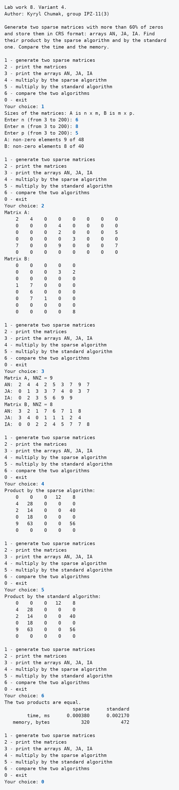
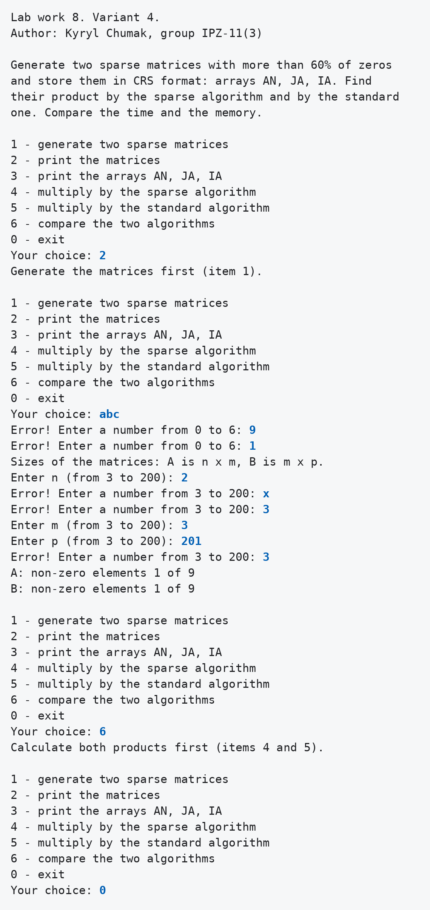
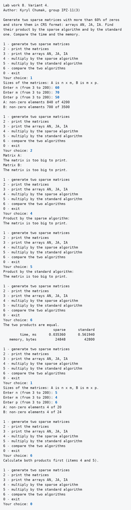
Таблиця 2 - Порівняння алгоритмів
| Розміри n, m, p | Час CRS, мс | Стандартний час, мс | Пам'ять CRS, байт | Пам'ять стандартна, байт |
|---|---|---|---|---|
| 6, 8, 5 | 0.000380 | 0.002170 | 320 | 472 |
| 60, 70, 50 | 0.035360 | 0.561940 | 24848 | 42800 |
На малих матрицях алгоритм CRS швидший приблизно в 6 разів, а на великих приблизно в 16 разів. Пам'яті він потребує менше в обох випадках, хоча масиви JA та IA теж займають місце.
Аналіз достовірності результатів
Перевірка в Excel
Матриці першого запуску я переніс у файл check.xlsx. Добуток там рахує
функція МУМНОЖ, а поруч стоїть вивід програми і різниця. Сума модулів різниць дорівнює 0.
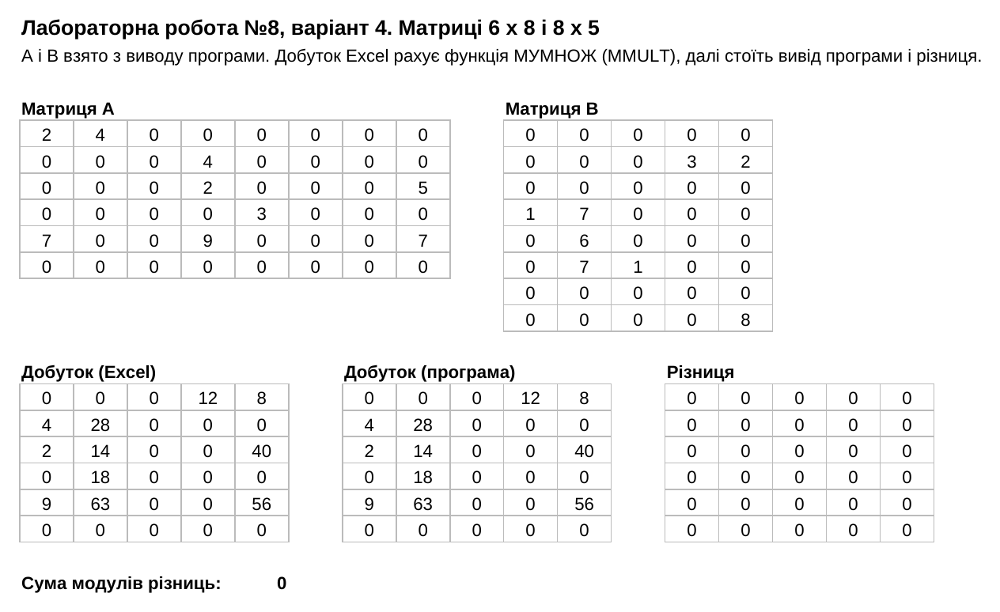
Ручна перевірка
Таблиця 3 - Елементи першого запуску, перевірені вручну
| Що перевіряється | Розрахунок | Програма |
|---|---|---|
| IA матриці A | у рядках 2, 1, 2, 1, 3, 0 ненульових елементів, тому початки 0, 2, 3, 5, 6, 9, а кінець 9 | 0 2 3 5 6 9 9 |
| рядок 2 матриці A в масивах | елементи з номерами 3 і 4: значення 2 і 5, стовпці 3 і 7 | AN: 2, 5; JA: 3, 7 |
| c03 | 4 · 3 = 12 | 12 |
| c24 | 5 · 8 = 40 | 40 |
| c41 | 9 · 7 = 63 | 63 |
| пам'ять CRS, 6, 8, 5 | (18 + 7 + 16 + 9 + 30) · 4 = 320 | 320 |
| пам'ять стандартна, 6, 8, 5 | (48 + 40 + 30) · 4 = 472 | 472 |
Рядки і стовпці в таблиці нумеруються з 0. Програма в обох запусках із порівнянням написала, що добутки однакові. У другому запуску команда 2 до створення матриць, команда 6 до обчислення добутків і некоректні значення дали повідомлення. У третьому після нової генерації команда 6 попросила обчислити добутки заново, бо старі добутки вже звільнено.
Висновки
Програма генерує дві матриці, зберігає їх у форматі CRS і рахує добуток двома алгоритмами. Усі дії меню
запускаються через масив покажчиків на функції, а масиви створюються через new і передаються
покажчиками.
Excel дав той самий добуток. На матрицях 60, 70, 50 алгоритм CRS витратив 0.035360 мс проти 0.561940 мс і
24848 байт проти 42800 байт. У трьох вкладених циклах
multiplySparse одночасно працюють номери з масивів обох матриць.